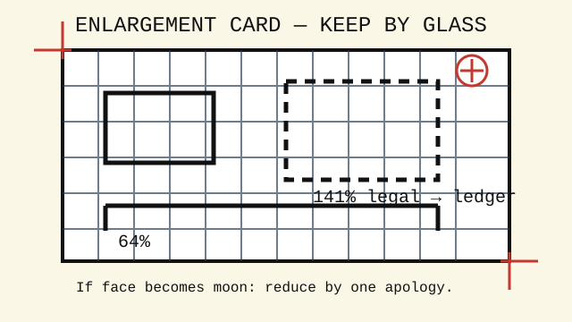

glass bed reference card
Enlargement chart with thumbprint at 141%
Posted beside the copier since the summer the window posters came out the size of doors.

Common conversions
| Original | Desired | Setting |
|---|---|---|
| receipt | readable evidence | 129% |
| postcard | window notice | 154% |
| library card | pocket poster | 200%, then apologize |
| face | less face | 78% |
Margin warnings
Leave one finger of white around the thing you love. The machine bites the top left first. If the copy comes out with a black crescent, lift lid, wipe glass, and check for coins, eyelashes, or rain.
Clerk's measurements
Ledger to legal: 77%. Legal to letter: 85%. Letter to ledger: 129%, but use 121% if the original contains a map, a musical staff, or handwriting by a relative. The machine does not respect dotted lines; it regards them as invitations.